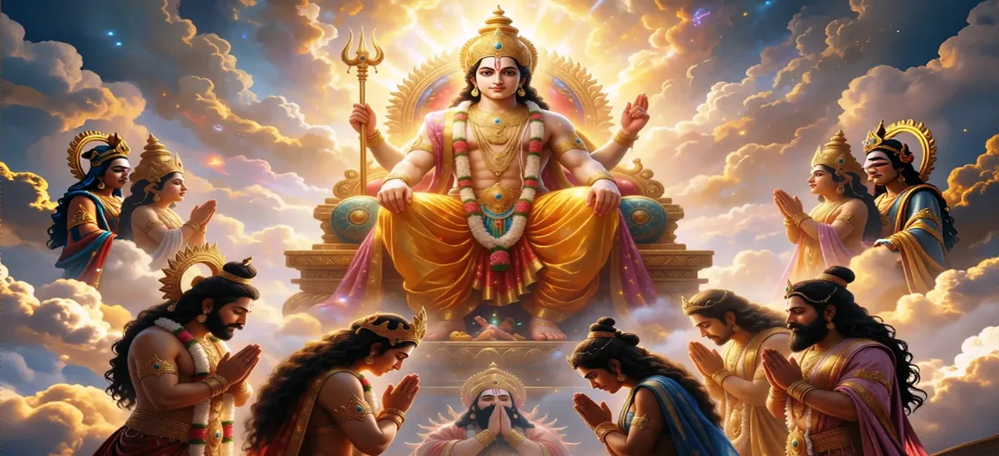

The Gods Praise Lord Kumāra
Chapter 29 of the Kumara Khanda presents the sublime hymns and reverent prayers offered by Lord Indra and the celestial assembly to honor Lord Skanda.
With overflowing devotion and deep gratitude, the gods extol the divine qualities, supreme valor, and grace of their invincible commander.
Chapter 29 Highlights & Full Overview
Devotional Stotras
Indra leading the gods in reciting profound hymns of praise.
Glorifying Skanda
Acknowledging Lord Kumāra as the supreme cosmic protector.
Divine Radiance
Witnessing the sublime aura of wisdom and spiritual power.
Reverent Offerings
Laying flowers and prostrating at the lotus feet of the Lord.
Eternal Gratitude
Expressing heartfelt thanks for freeing the three worlds.
Spiritual Upliftment
The inspiring power of sacred prayer and devotion.
Core Topics Detailed in This Chapter
1. Indra's Address to Lord Skanda
Stepping forward with joined palms and a heart full of reverence, Lord Indra addresses Lord Skanda. He acknowledges Skanda as the supreme embodiment of Śiva's energy, born to rescue the universe from the depths of despair and tyranny.
2. The Hymns of Praise (Stotras)
Led by Indra and Brahmā, the deities chant sublime stotras. They praise Lord Kumāra's peerless beauty, his radiant youth, his unmatched wisdom, and his role as the eternal protector of righteousness, dharma, and the divine realms.
3. Glorification of the Divine Vel and Valor
The hymns specially highlight the infallible weapon, the Vel, which shattered the impenetrable arrogance of Tārakāsura. The gods glorify the spear as the ultimate symbol of spiritual knowledge dispelling the darkness of ignorance.
4. The Lord's Graceful Response
Pleased by the genuine devotion and heartfelt prayers of the deities, Lord Skanda smiles compassionately. He bestows his benign blessings upon them, assuring them that righteousness will always prevail and that he will ever protect the worlds from evil.
5. Spiritual Benefits of Reciting the Stotra
The text notes that whoever reads or listens to these sacred praises with faith and purity of heart will be freed from fear, sorrow, and obstacles, attaining supreme devotion, peace, and spiritual realization.
6. Transition to Chapter 30 (The Glory and Teachings of Lord Kumāra)
With the divine praise concluded and the blessings bestowed, the narrative transitions smoothly into Chapter 30: **The Glory and Teachings of Lord Kumāra**.
Key Teachings and Spiritual Takeaways of Chapter 29
Power of Prayer
Sincere praise and devotion attract supreme divine grace.
Recognizing Divinity
Gratitude involves acknowledging the divine source of protection.
Humble Surrender
Even celestial rulers bow in humility before supreme wisdom.
Fearlessness
Taking refuge in divine praise dispels all worldly fears.
Graceful Blessing
The Lord always responds to true devotion with boundless grace.
Spiritual Reflection
Chapter 29 teaches us that offering praise and gratitude to the divine is a vital spiritual practice. When we honor the higher power that guides us through life's battles, our hearts become purified, opening us to receive divine blessings and inner peace.
Living the Message of Chapter 29
Begin your daily routine with prayers of gratitude and appreciation for divine guidance.
Acknowledge and respect the virtues and noble actions of those who protect and guide you.
Recite sacred stotras or hymns to maintain inner calm and mental clarity.
Key Spiritual Concepts
The recitation of sacred hymns of divine praise.
Glorification of the supreme Lord by celestial beings.
The deep emotional state of devotion and surrender.
Receiving the grace and blessings of the Lord.
The divine assurance of safety and protection.
Meritorious hymns that purify the reciter and listener.
Chapter Summary
Kumara Khanda Chapter 29 features Lord Indra and the deities offering heartfelt hymns of praise and devotional stotras to Lord Skanda. Acknowledging his supreme valor and grace, the gods receive his benign blessings of eternal protection and peace.
Frequently Asked Questions
1. What is the primary focus of Kumara Khanda Chapter 29?
Chapter 29 focuses on the heartfelt hymns, prayers of gratitude, and reverent glorification offered by Lord Indra and the celestial deities to Lord Skanda.
2. How do the deities honor Lord Kumāra?
The deities bow with utmost devotion, reciting powerful Vedic stotras that acknowledge Lord Skanda as the supreme savior, conqueror of ego, and protector of the cosmos.
3. What chapter follows Chapter 29?
The next chapter is Chapter 30, titled 'The Glory and Teachings of Lord Kumāra'.
“With joined palms and overflowing devotion, the deities extolled Lord Skanda, the supreme savior and eternal guardian of the cosmos.”
Continue Through Kumara Khanda
Chapter 29 details the praises offered by the gods. Continue to the next chapter, The Glory and Teachings of Lord Kumāra.